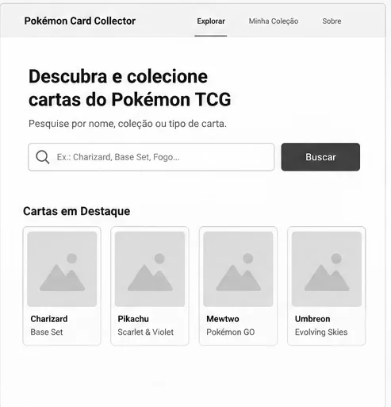
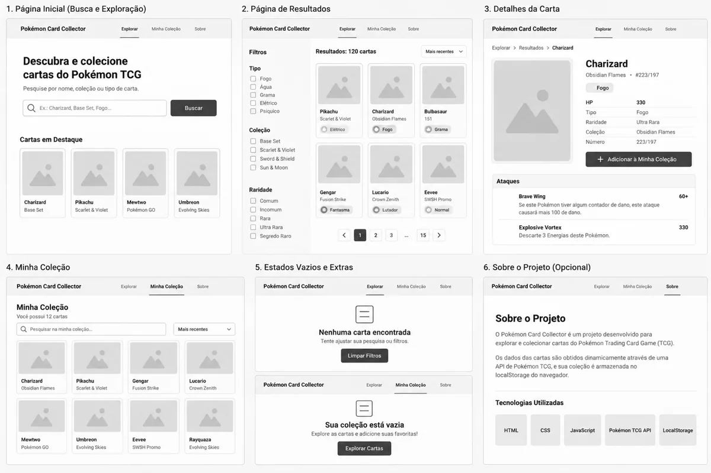

Nome do Site
Pokémon Card Collector
O nome diz exatamente o que o site faz: reunir e organizar uma coleção de cartas do Pokémon Trading Card Game. Ele usa dois termos que o público-alvo já procura em inglês, card e collector, o que ajuda na busca e na identidade visual, já que o logotipo nasce da ideia de um álbum de cartas.
Disponibilidade de domínio (opcional): pokemoncardcollector.com.br. Pokémon é marca registrada da Nintendo, da Creatures e da Game Freak. Este é um projeto escolar, sem fins comerciais, e o site traz essa informação no rodapé, junto com o crédito à API usada.
Finalidade do Site
O site é um álbum digital de cartas do Pokémon TCG. Ele busca os dados das cartas em uma API pública e deixa a pessoa montar a própria coleção direto no navegador, sem cadastro e sem servidor.
O que o site oferece
- Pesquisa de cartas por nome e por coleção, com os dados vindos da API.
- Ficha de cada carta com nome, imagem, tipo, HP, ataques, raridade, ilustrador e a coleção a que pertence.
- Botão para adicionar e remover cartas da coleção pessoal.
-
Coleção salva no
localStorage, que continua lá quando a pessoa fecha e reabre a página. - Resumo da coleção: quantas cartas foram guardadas e quais raridades aparecem.
- Formulário para pedir a lista de trocas das cartas repetidas.
Público-alvo
Pessoas que colecionam cartas do Pokémon TCG no Brasil, principalmente quem está voltando a colecionar e precisa saber o que já tem antes de comprar ou trocar.
Páginas previstas
| Página | Arquivo | Conteúdo principal |
|---|---|---|
| Início | index.html |
Apresentação, busca rápida, cartas em destaque e resumo da coleção salva. |
| Cartas | cartas.html |
Catálogo com no mínimo 15 cartas vindas da API, filtro por coleção e tipo, e modal com a ficha completa de cada carta. |
| Minha coleção | colecao.html |
Cartas guardadas pela pessoa, com o resumo por raridade e o formulário da lista de trocas. |
| Lista enviada | lista-enviada.html |
Página de ação do formulário, que mostra os dados preenchidos. |
Fonte de dados
A fonte principal é a API TCGdex
(https://api.tcgdex.net/v2/pt/cards), que não exige chave e devolve os dados
em português, inclusive raridade e tipo. A API Pokémon TCG
(https://api.pokemontcg.io/v2/cards) fica como alternativa. Um arquivo JSON
local com cartas em destaque serve de reserva para o bloco try...catch, para
que a página continue útil se a API estiver fora do ar.
Cenários
Perguntas que o público-alvo chega fazendo ao site:
- "Quais cartas de Charizard existem em português e em quais coleções elas saíram?"
- "Essa carta que eu acabei de abrir no pacote é rara? Quem foi o ilustrador dela?"
- "Quantas cartas eu já guardei no meu álbum e quais ainda faltam?"
- "Como eu mostro a lista das minhas cartas repetidas para alguém que quer trocar?"
Esquema de Cores
A paleta vem do próprio verso das cartas do Pokémon TCG: azul-escuro com o amarelo da marca. O azul sustenta as áreas de navegação e o amarelo marca só o que pede ação, para não competir com as imagens coloridas das cartas.
- Azul-noite#16233F
- Amarelo-relâmpago#F2B705
- Branco-gelo#F7F8FA
- Grafite#22252A
| Cor | Código | Onde é usada | Contraste |
|---|---|---|---|
| Azul-noite | #16233F |
Fundo do cabeçalho e do rodapé, títulos h1 a h3 e borda das fichas de carta. | 14,7:1 com o branco-gelo |
| Amarelo-relâmpago | #F2B705 |
Botões principais, item ativo da navegação e selo de raridade. O texto sobre ele é sempre grafite. | 8,5:1 com o grafite |
| Branco-gelo | #F7F8FA |
Fundo das páginas e das fichas, para dar descanso em volta das imagens. | 14,5:1 com o grafite |
| Grafite | #22252A |
Texto corrido, listas e rótulos do formulário. | 14,5:1 com o branco-gelo |
Os contrastes foram conferidos pela fórmula da WCAG e passam no nível AAA para texto normal, que exige 7:1.
Tipografia
Duas fontes do Google Fonts, uma para chamar atenção e outra para ler sem cansar.
Pokémon Card Collector
Rubik
Usada nos títulos, no nome do site e nos botões, nos pesos 500 e 700. Tem letras largas e cantos levemente arredondados, que lembram o estilo das cartas sem imitar a marca.
Charizard · Fogo · 180 HP · Ultra Rara
Source Sans 3
Usada no texto corrido, nas listas, nas fichas das cartas e nos campos do formulário, nos pesos 400 e 600. É uma fonte de leitura feita para tela, legível em 320px e com números fáceis de distinguir, o que importa nos valores de HP.
Wireframe
Esboço em preto e branco da página inicial, na tela pequena e na tela grande. O objetivo é decidir a estrutura antes das cores e das imagens.
Tela pequena (320–430px)
Esboço à mão ainda a incluir, em imagens/wireframe-pequeno.webp


O que cada esboço precisa mostrar
- Cabeçalho com logotipo e navegação: hambúrguer na tela pequena, links na linha na tela grande.
- Campo de busca de cartas logo abaixo do cabeçalho.
- Área de cartas em destaque: uma coluna na tela pequena e três colunas na tela grande.
- Bloco com o resumo da coleção salva no navegador.
- Rodapé com autoria, link das atribuições e link do vídeo.